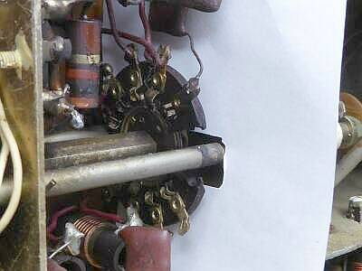
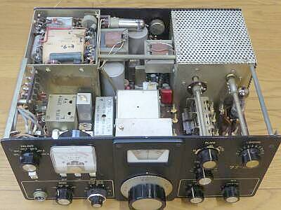
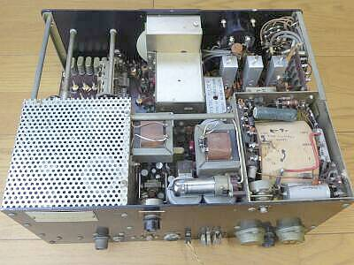
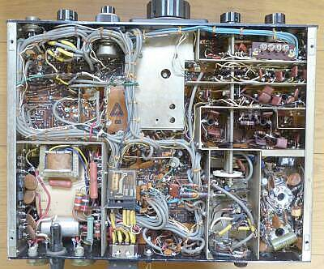
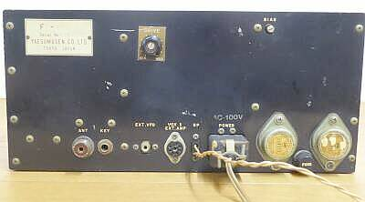
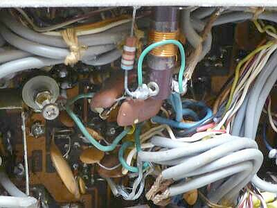

 |
外ケースから出して、電源回りの最低のチェックを行った後、通電したら何やらモノが焼ける臭いがします
なんとバンドＳＷのウエハから小さな炎が見えます
慌てて消火しました
ベークライトが劣化／絶縁不良となって燃えたものと思われます（一部欠落、炭化））
送信ドライブ１２ＢＹ７Ａのプレート側です
関係して、ＲＦＣが損焼しています
ＲＦＣはともかく、ウエハについては交換しか解決策はありません
これで、本機で送信することは諦めました
（モノバンド送信対応は、やれば可能！） |
 |
シャーシ上面 フロント側より
非常にコンパクトにまとめられています
構造強化のためのシャフトが２本採用されています
固定ＣＨのクリスタルを取り付けるＬアングルも構造強化の役を担っています
この構造は、そのままＦＴＤＸ１００に引き継がれています
|
|  |
シャーシ上面 リア側より
ＦＴＤＸ１００には無いスタビロが見えます
器用に取り付けられてます
オリジナルか、後の改造かは？？
いずれにしろ電源部の様子は少し異なります |
 |
シャーシ底面
ワイヤーハーネスを使って､整然と配線してあります
時間の経過の割には、全体的に保存状態は良いです
リレー他、接触不良の発生は、当然生じます |
 |
リアパネル
スピーカー出力は､懐かしいフィーダーコンセント
本体にスピーカーの内蔵はありません
ＤＣ-ＤＣインバータ用ＴＲのヒートシンクは見当たりません
リアパネルに直接取り付けることで放熱器として使用してあります
ファイナル部の強制空冷用ＦＡＮオプションはありません
唯一見えるツマミは、ＡＭ送信時のパワー調整用
ＭＩＣゲインは、基板下の半固定ＶＲです！ |
| |
|
本機は、上蓋が外れるという構造はありません
全てが全て、ＦＴＤＸ１００につながる様子が良くわかります
完成形を目指した初回作品、という感じかもしれません
確か、１９６７年の発売
６８年には、ＦＴＤＸ１００の登場があったようですから、短期間の発売…きっと、多くの製品は出回っていないのではないかと思われます
実際に稼働をさせてみて、
ＡＧＣリリース時間は短いもので、ＳＳＢ受信にはやや聞きづらい、時定数の切り替えがないことで仕方ないことでしょうが
また、非常に強力な信号に対しては、ＡＧＣだけでは追い付かず、手動によるＲＦゲイン調整が必要です
当時とすれば、こんなものです
今回、送信は諦めましたが、ＦＴＤＸ１００では、本機にはパネルに用意のない、ＭＩＣゲイン、キャリア（パワー）調整ツマミがフロントに用意され、リアには、ＶＯＸ関係のつまみが用意されました
本機は、ＰＴＴのみの対応でＶＯＸの内臓はなく、外部に用意して使用するように端子がリア・パネルに配してあります |
 |
受信アンテナ経路にあるトラップコイル
なぜかショート（ジャンプ配線）してあります
ショートを外すと
・７ＭＨｚ帯でかなり感度低下
・３．５ＭＨｚ帯で、少し感度が上昇します
このままにしておきましょう |
|
ＢＡＮＤ（ＭＨｚ）
周波数 |
ＣＷ／ＳＳＢ
ＲＦ信号のＯＮ／ＯＦＦで
S/N１０ｄｂが得られる信号強度 |
| ３．６ |
１．５μV |
| ７．１ |
０．７μV |
| １４．２ |
０．５μＶ |
| ２１．２ |
０．５μＶ |
| ２８．６ |
０．５μＶ |
スペックは、１μＶ以下で、Ｓ／Ｎ１０ｄｂ です
Ｌｏｗバンドに感度低下・・・ＦＴＤＸ１００にも同様のことが起こります
要は、７ＭＨｚ帯以下、特に３．５ＭＨｚ帯に残留ノイズが多い、結果的にＳ／Ｎがとれない状況に思われます
実用に問題になることはないと思いますが
各バンドとも、４０ｄｂμで、おおよそS９を指示します
１０ｍバンドですが、２８．５～２９．０MHｚの1バンドカバーです
|